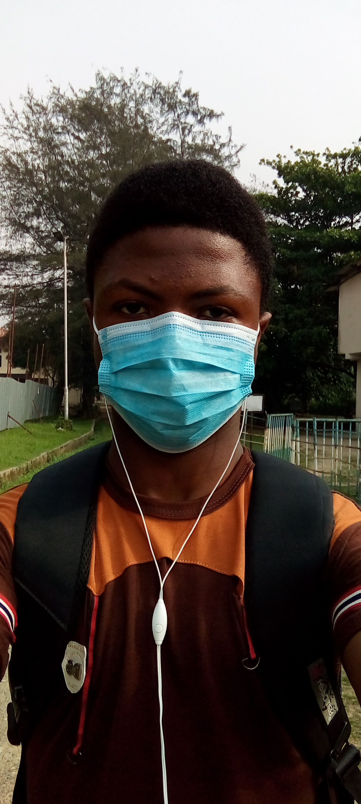
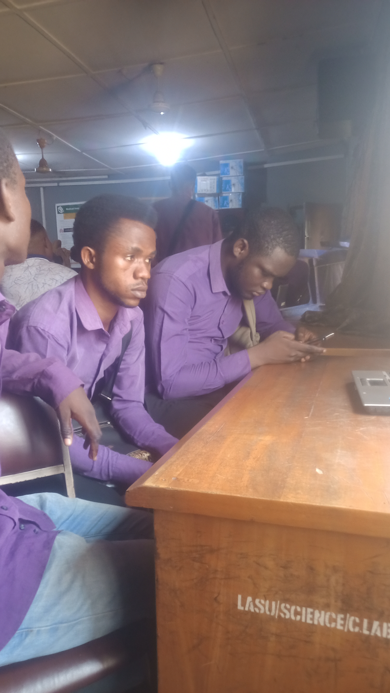
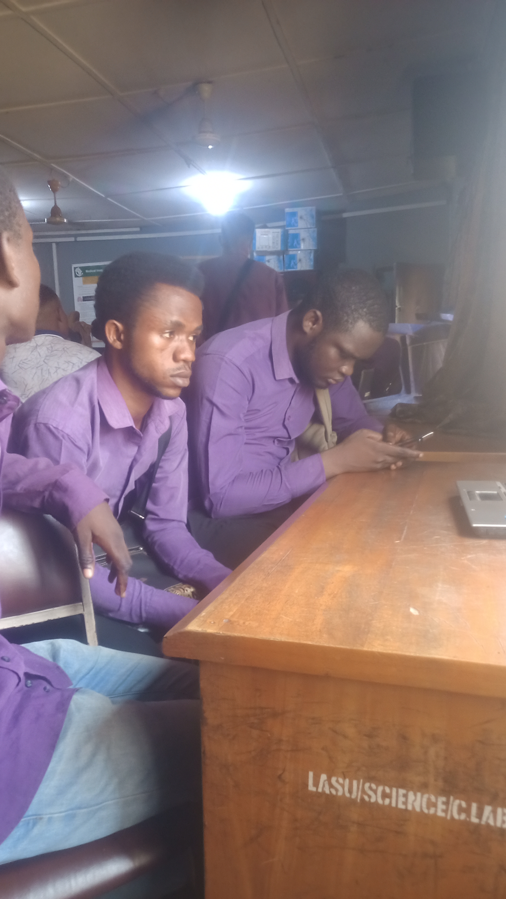
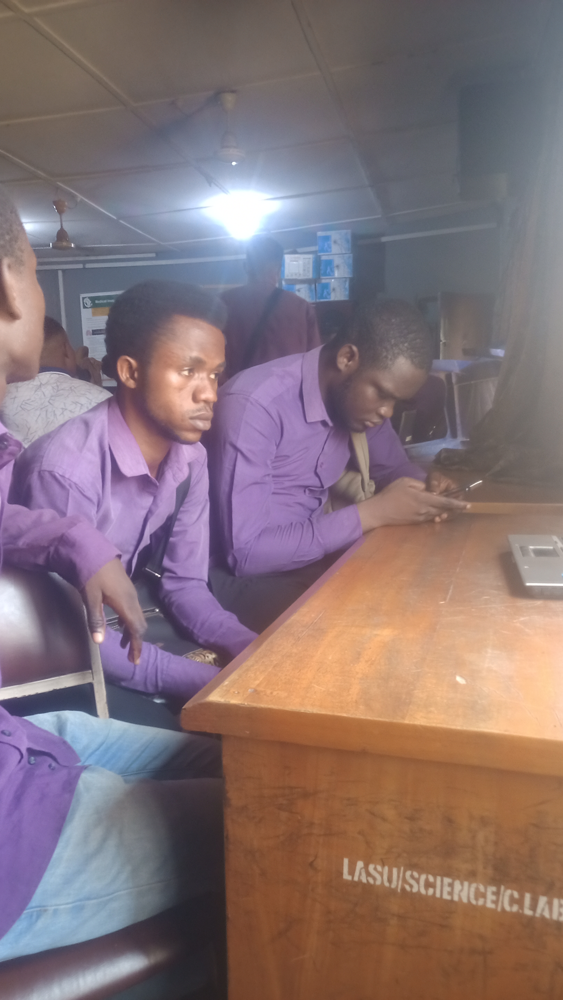

 



Daniel Olanrewaju Ajiboye
Computer science dept
Lagos 103101
boyelanrewaju@gmail.com
+2349067580716
Date of Birth: 2003-09-18
Email: boyelanrewaju@gmail.com
Home address: 16, abayomi Joseph Street, jah-micheal bus stop, along badagry expressway, Lagos, Nigeria.
Highest Level of Education: Undergraduate (computer science: THIRD YEAR)
Current class: Second class upper